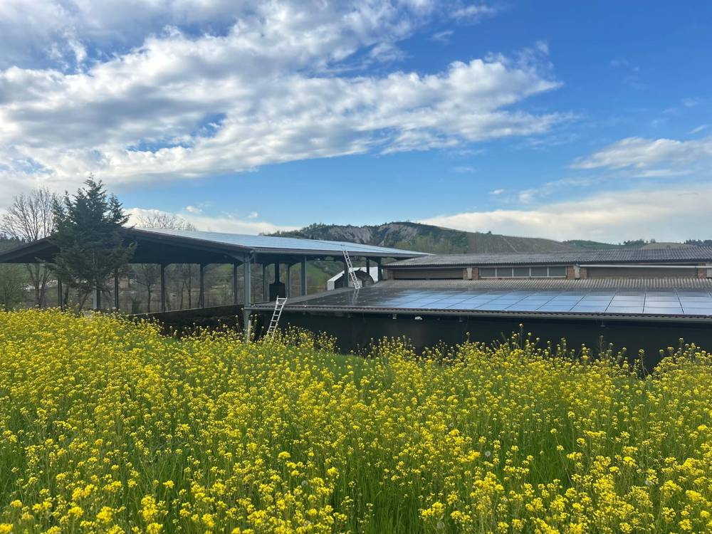

이탈리아 발사모자 재생에너지 공동체, 주민 25가구 태양광·히트펌프 공동구매 추진

시민·소상공인 102명 협동조합, 태양광 200kW 넘게 설치, 자원봉사자 방문 홍보에 행사 4회 75명 참석
이탈리아 에밀리아로마냐주 발사모자의 재생에너지 공동체가 주민 25가구의 태양광·히트펌프·창호 공사를 묶어 공동구매로 진행한다. 유럽연합 집행위원회는 11월 10일 이 사업을 시민 주도 건물 개보수 사업의 사례로 소개했다. 계획된 공사는 태양광 16가구, 냉방기 10가구, 히트펌프 9가구, 창호 교체 7가구이며 대상은 대부분 단독주택이다.
2024년 6월 협동조합으로 출범한 이 공동체는 시민과 소상공인 102명이 조합원이고, 설치한 태양광이 200kW 이상이다. 공동구매는 2026년 5월 지역 에너지기관 AESS(에밀리아로마냐주 에너지·지속가능발전 기관)의 지원으로 시작했다.
여름 동안 자원봉사자들이 전단 배포와 가정 방문에 나섰고 행사 4회에 75명이 참석했으며, 설치업체 관심 표명서는 7월 20일까지 받았다. 공사는 2026년 말에서 2027년 초 사이에 시작할 예정이며, 실제 절감액은 최종 견적과 공사가 끝난 뒤에야 나온다.
출처: 유럽연합 집행위원회 2026-11-10 How Valsamoggia REC is becoming a model for future energy communities 원문 보기
출처: greenMe 2026-11-11 Ilaria Rosella Pagliaro 원문 보기
출처: CER Valsamoggia 날짜 미표시 공동구매 설치업체 관심 표명 공고 원문 보기
イタリア・ヴァルサモッジャの再エネ共同体、住民25世帯で太陽光・ヒートポンプを共同購入へ
市民・小規模事業者102人の協同組合、太陽光200kW超を設置、ボランティアの戸別訪問などで説明会4回に75人
イタリア・エミリア＝ロマーニャ州ヴァルサモッジャの再生可能エネルギー共同体が、住民25世帯の太陽光・ヒートポンプ・窓の工事をまとめて共同購入で進める。欧州委員会は11月10日、この事業を市民主導の建物改修事業の事例として紹介した。計画された工事は太陽光16世帯、冷房機10世帯、ヒートポンプ9世帯、窓の交換7世帯で、対象はほとんどが戸建て住宅だ。
2024年6月に協同組合として発足したこの共同体は、市民と小規模事業者102人が組合員で、設置した太陽光は200kW以上にのぼる。共同購入は2026年5月、地域のエネルギー機関AESS（エミリア＝ロマーニャ州のエネルギー・持続可能な開発機関）の支援で始まった。
夏の間、ボランティアがチラシ配布と家庭訪問に回って4回の催しに75人が参加し、設置業者の関心表明書は7月20日まで受け付けた。工事は2026年末から2027年初めにかけて始まる予定で、実際の節約額は最終見積もりと工事完了後に初めてわかる。
出典: greenMe 2026-11-11 Ilaria Rosella Pagliaro 原文を読む
意大利瓦尔萨莫贾可再生能源社区推进25户居民团购光伏和热泵
由102名市民和小商户组成的合作社，已安装光伏200kW以上，志愿者上门宣传，4场活动共75人参加
意大利艾米利亚-罗马涅大区瓦尔萨莫贾的可再生能源社区，把25户居民的光伏、热泵和门窗工程合并，以团购方式推进。欧盟委员会11月10日把这一项目作为市民主导的建筑改造项目案例做了介绍。计划中的工程为光伏16户、制冷机10户、热泵9户、更换门窗7户，对象大多是独栋住宅。
2024年6月以合作社形式成立的该社区，有102名市民和小商户作为社员，已安装的光伏达200kW以上。团购于2026年5月在当地能源机构AESS（艾米利亚-罗马涅大区能源与可持续发展机构）的支持下启动。
夏季期间，志愿者发放传单并上门走访，4场活动共有75人参加，安装企业的意向书受理到7月20日。工程预计在2026年底至2027年初之间开工，实际节省多少，要等最终报价确定、工程完工之后才知道。
来源: greenMe 2026-11-11 Ilaria Rosella Pagliaro 查看原文
Italy's Valsamoggia Energy Community Moves Ahead With Group Purchase of Solar and Heat Pumps for 25 Households
Cooperative of 102 residents and small businesses has installed more than 200kW of solar; volunteer outreach and four events drew 75 people
The renewable energy community of Valsamoggia, in Italy's Emilia-Romagna region, is bundling the solar, heat pump and window work of 25 households into a group purchase. On Nov. 10 the European Commission presented the project as a case under its citizen-led building renovation initiative. The planned work covers solar for 16 homes, cooling units for 10, heat pumps for nine and new windows for seven, and most of the homes are detached houses.
Set up as a cooperative in June 2024, the community has 102 members, residents and small businesses, and the solar installed totals more than 200kW. The group purchase began in May 2026 with support from AESS, a regional energy agency (the Energy and Sustainable Development Agency of Emilia-Romagna).
Over the summer, volunteers handed out flyers and visited homes and four events drew 75 people, while expressions of interest from installers were accepted until July 20. Work is due to start between late 2026 and early 2027, and actual savings will only be known after final quotes are set and the work is finished.
Source: greenMe 2026-11-11 Ilaria Rosella Pagliaro Read the original